Tu Mac, nítido donde sea
Vídeo a todo color y una pantalla a medida, en el iPad, el iPhone y el iPhone Duo. Como si estuvieras sentado delante de tu Mac.
4,99 €, se paga una sola vez. Sin cuentas ni publicidad.
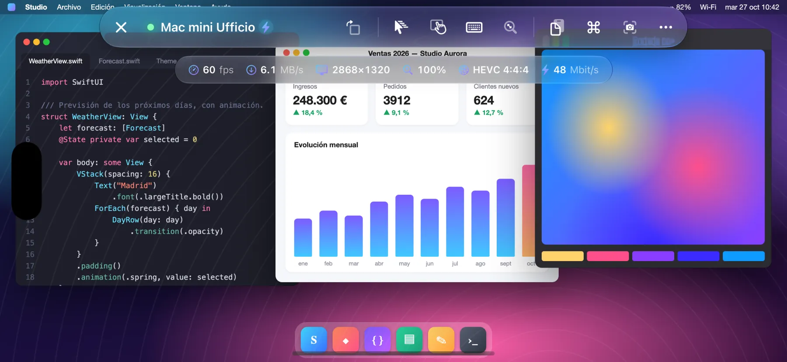
- 60 fps
- HEVC 4:4:4
- Retina
Cómo funciona
Open Remote PRO se conecta a Compartir pantalla, integrado en macOS, el mismo servicio que usa Apple Remote Desktop.
- No instalas nada en el Mac
- No creas ninguna cuenta
- Ningún dato pasa por servidores externos
Color pleno, fluido a 60 fps
Vídeo HEVC 4:4:4 a todo color, decodificado por hardware: texto tan nítido como en la pantalla del Mac, degradados y fotos sin halos. Desplázate, arrastra ventanas, mira un vídeo: fluido hasta 60 fps, con baja latencia.
Si el Mac no ofrece el modo vídeo, la app pasa sola a las codificaciones VNC clásicas.
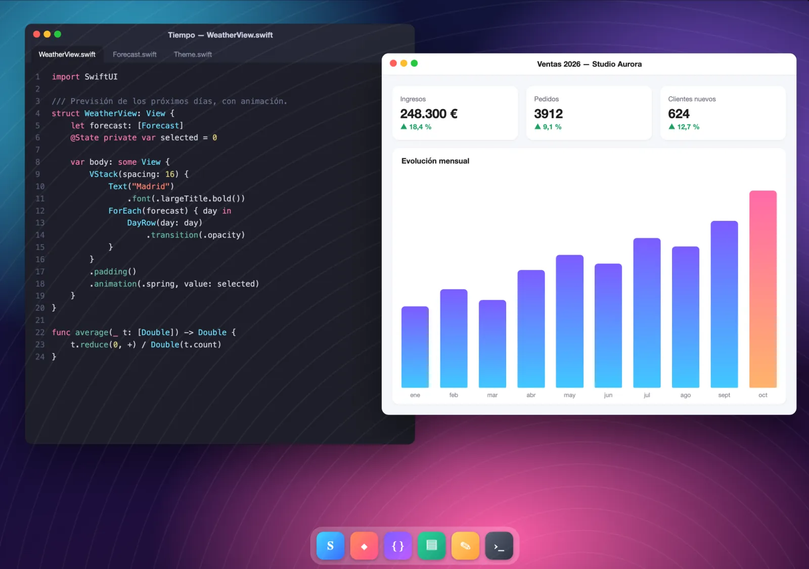
La pantalla se adapta a ti
El Mac crea un monitor virtual Retina exactamente del tamaño de tu pantalla: sin bandas negras, sin texto diminuto. Giras el dispositivo, usas Split View o Stage Manager, despliegas el iPhone Duo: el monitor cambia de tamaño solo.
- Con el teclado abierto, tú eliges: desliza dos dedos para ver la parte tapada o reduce la pantalla del Mac a la zona visible.
- En el iPhone, un botón gira la pantalla incluso con el bloqueo de rotación activado.
- Mac con varios monitores: cambia de uno a otro con un toque o míralos todos a la vez.
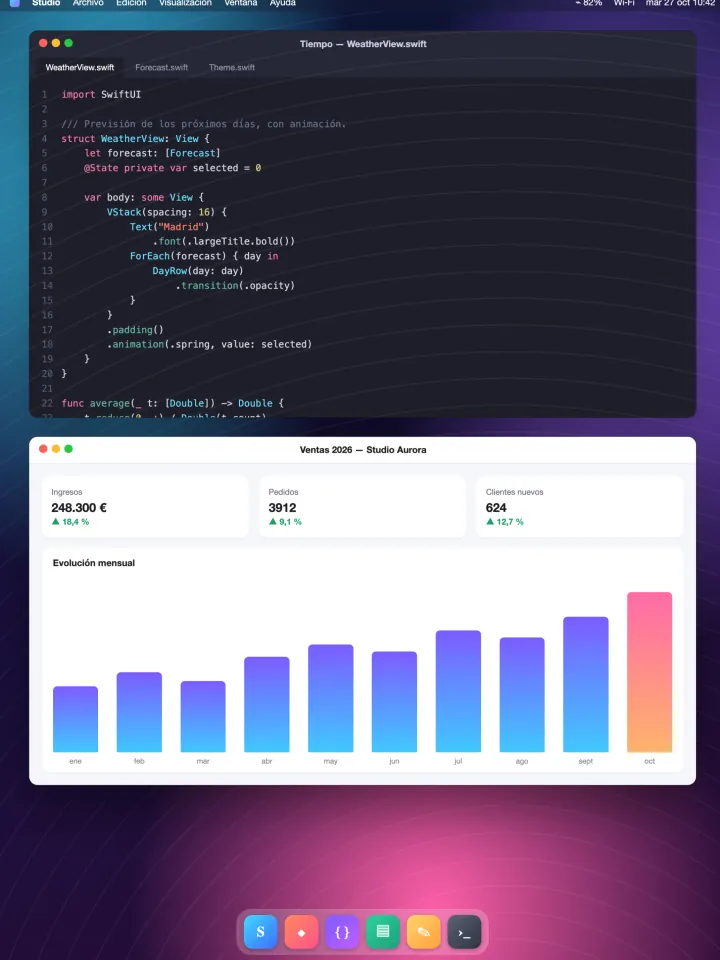
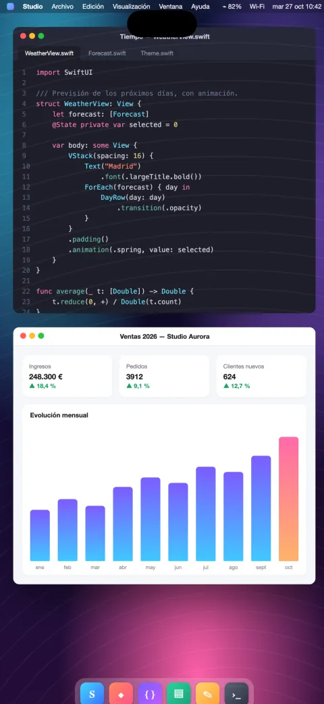
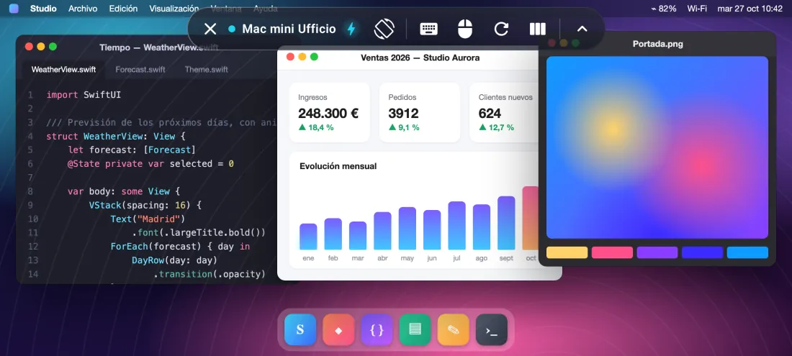
Optimizada para iPhone Duo
Despliega el teléfono y la pantalla del Mac crece con él; pliégalo y se ajusta a la pantalla exterior.
Plegado, el Mac se ajusta a la pantalla exterior. Desplegado, se convierte en un auténtico escritorio de 7,6 pulgadas, con el espacio de un portátil.
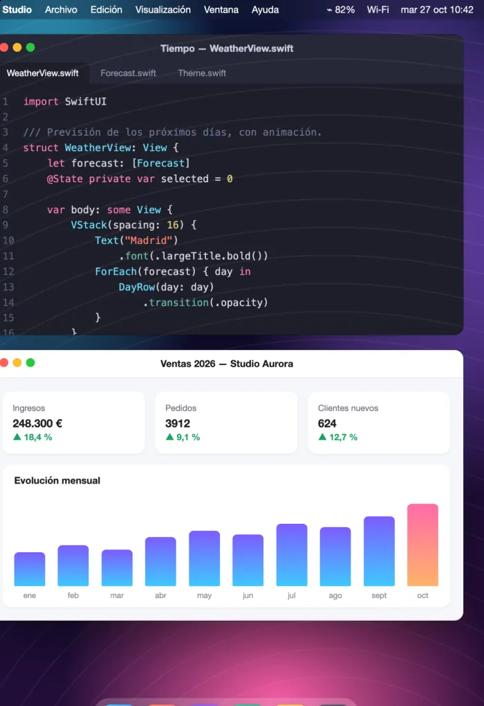
- El monitor virtual del Mac cambia de tamaño en el momento en que pliegas o despliegas el teléfono: sin reconectar, sin bandas negras.
- La barra de controles se reorganiza sola entre la pantalla exterior y la interior.
- Un botón para girar la pantalla y una sugerencia de giro cuando giras el teléfono.
Tus Mac de un vistazo
Pensada para quien gestiona varios Mac, en casa, en el estudio o en la oficina.
- ¿Usas Apple Remote Desktop? Importa en un momento la lista de ordenadores exportada desde Remote Desktop.
- Fichas con la última imagen de cada Mac y su estado en tiempo real: disponible o no disponible.
- Detección automática de los Mac de la red local y conexión rápida por dirección.
- Gestión remota por SSH: hardware, sistema y discos, apps instaladas, bloqueo de pantalla, reposo, reinicio y apagado, con verificación de la identidad del Mac.
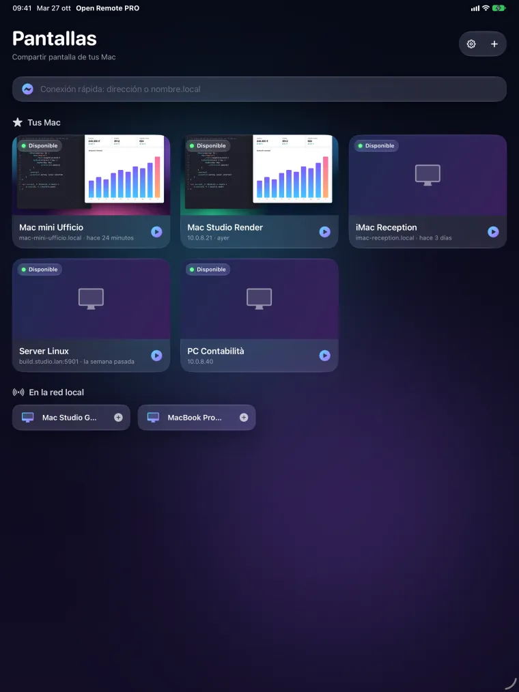
Control, compatibilidad, privacidad
Control natural
- Modo trackpad o toque directo, clic derecho con dos dedos, zoom con los dedos sin saltos.
- Desplazamiento preciso con inercia; tres dedos para pasar páginas.
- Teclado físico o en pantalla con la distribución correcta, incluso en los campos de contraseña.
- Barra con esc, tab, flechas, F1–F12 y teclas modificadoras; atajos listos (Mission Control, Spotlight, instantáneas y más).
- Portapapeles compartido entre el Mac y tu dispositivo; instantáneas de la pantalla para guardar o compartir.
- Modo Observar para mirar sin tocar nada.
También PC y Linux
- Servidores VNC estándar en Windows y Linux.
- PC con Windows mediante Escritorio remoto (RDP) en el iPad y el iPhone.
Android, pronto en Google Play
En el teléfono, el plegable y la tableta Android: fluida hasta 60 fps, hasta 120 en las pantallas que lo admiten.
Privacidad desde el diseño
- Sin cuentas, sin publicidad, sin seguimiento.
- Las contraseñas y las claves se quedan en el llavero de tu dispositivo.
- La app solo se conecta a los ordenadores que tú indicas.
Así se ve
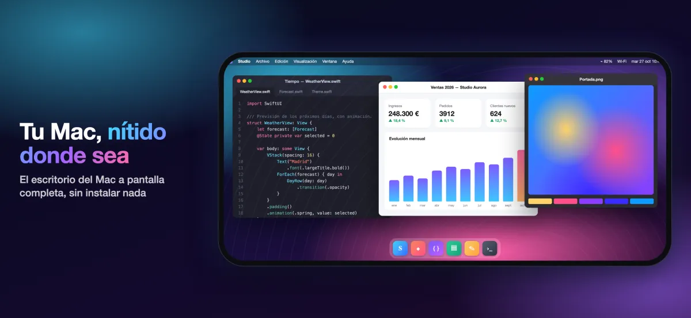
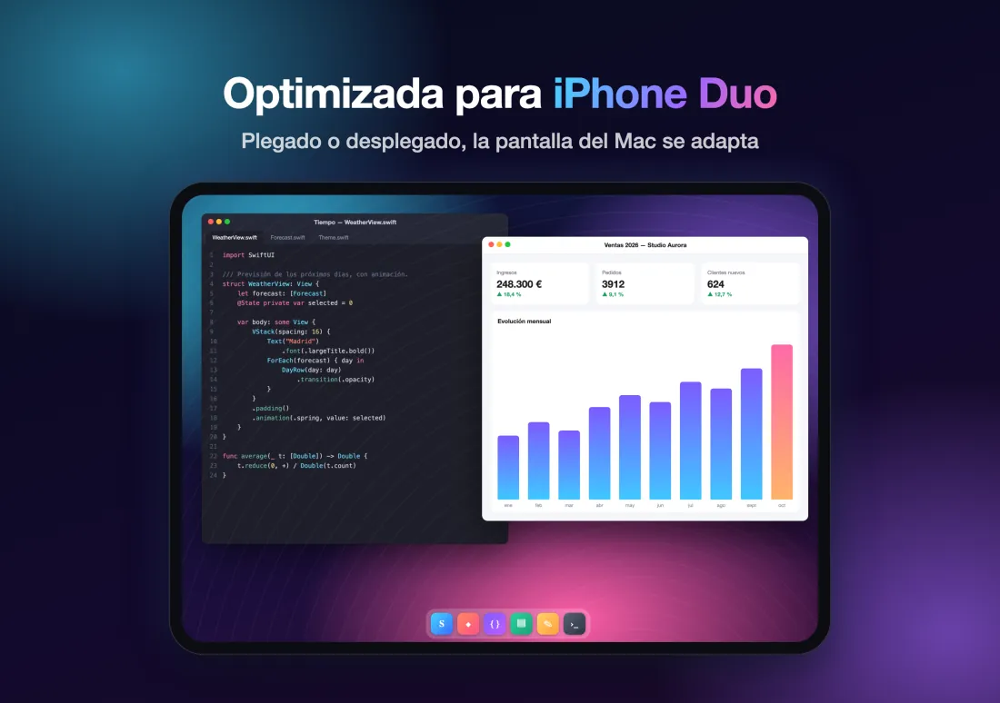
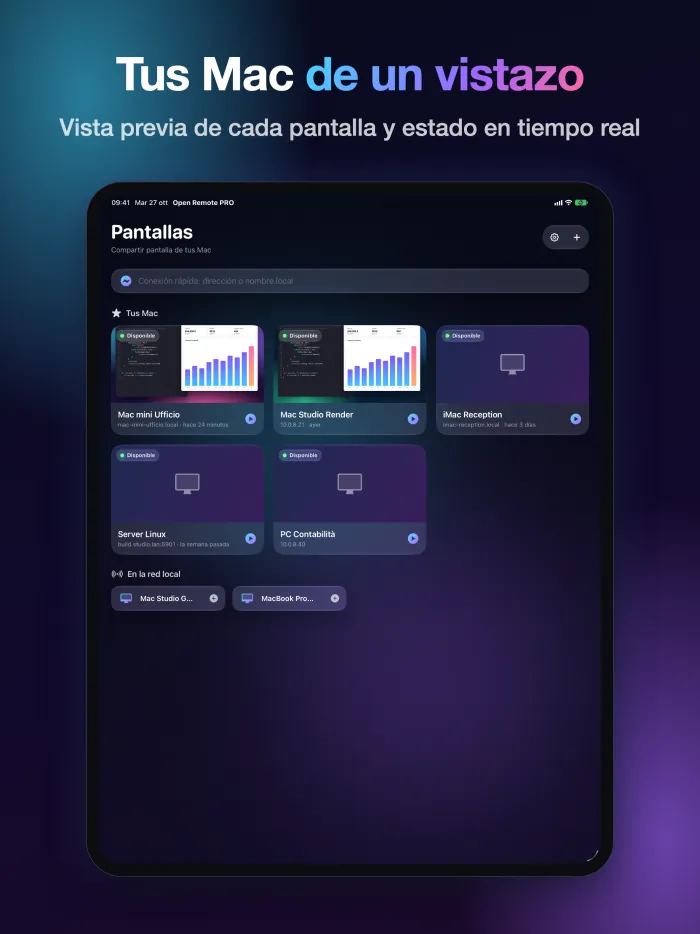
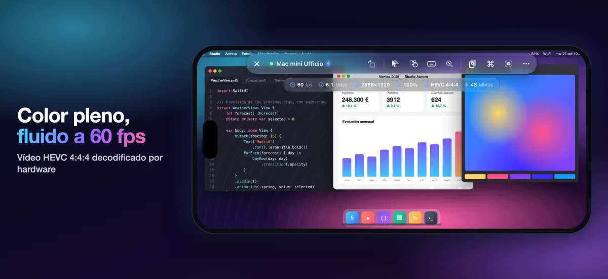
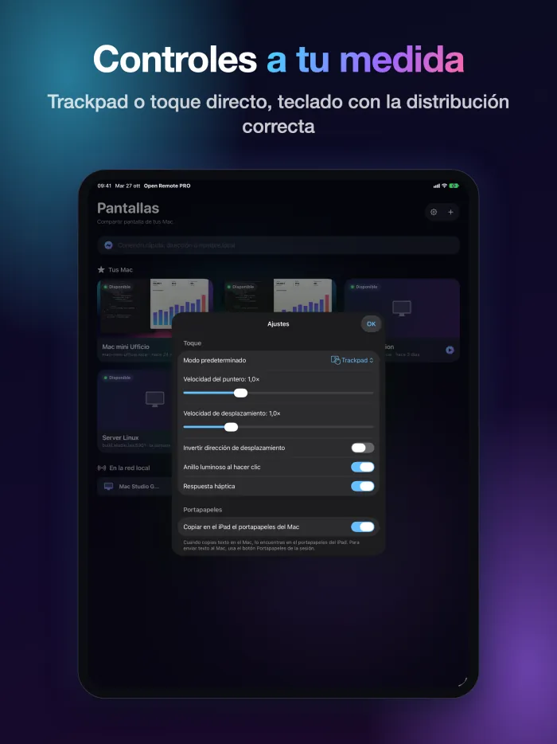
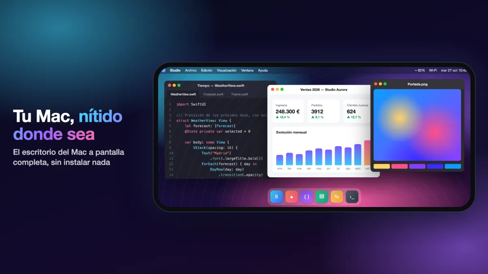
Una sola compra
4,99 €
Pagas una sola vez, en el App Store.
Descárgala enApp StorePrecio en los países del euro; en otros lugares se aplica el precio que muestra el App Store.
Requisitos
Para el vídeo de alta calidad necesitas un Mac con chip de Apple y macOS 14 o posterior, con Compartir pantalla activado (Ajustes del Sistema › General › Compartir). Los demás Mac y los servidores VNC funcionan con las codificaciones clásicas. Fuera de casa o de la oficina, usa una VPN.
Preguntas frecuentes
¿Qué tengo que instalar en el Mac?
Nada. En el Mac, abre Ajustes del Sistema › General › Compartir y activa Compartir pantalla. Después añade el Mac en la app (si está en la misma red, ya aparece en la lista) e inicia sesión con el nombre y la contraseña de un usuario de ese Mac.
¿Qué necesito para el vídeo de alta calidad?
Un Mac con chip de Apple y macOS 14 o posterior. Los demás Mac y los servidores VNC funcionan con las codificaciones clásicas.
¿Funciona fuera de casa?
Sí, con una VPN hacia la red del Mac. No expongas Compartir pantalla directamente a Internet.
¿Funciona con PC con Windows y Linux?
Sí, con los servidores VNC estándar en Windows y Linux. En el iPad y el iPhone también te conectas a PC con Windows mediante Escritorio remoto (RDP).
¿Qué datos recopila la app?
Ninguno: ni cuentas, ni publicidad, ni seguimiento. La lista de ordenadores, las contraseñas y las claves se quedan en tu dispositivo, y la app solo se conecta a los ordenadores que tú indicas.
¿Cuándo llega a Android?
La app para Android llegará pronto a Google Play, para teléfonos, plegables y tabletas.
Más respuestas en la página de soporte (en inglés).